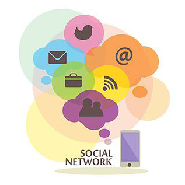
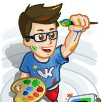
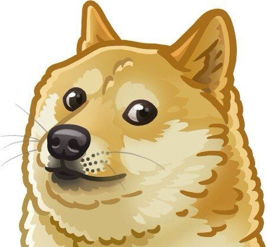

Моя Страница
Мои Друзья
Мои Фотографии
Мои Видеозаписи
Мои Аудиозаписи
Мои Сообщения +3
Мои Группы
Мои Ответы
Мои Закладки
Мои Настройки
Напоминание
Сегодня состоится встреча Английский для лентяев

Конкурс для дизайнеров с ценными призами
ATLASS - шаблон социальной сети
продукт

Павел Дуров
Друзья новости
689 друзей
Друзья онлайн
138 друзей
- Мария Ерофеева
- Иоланта Пряхина
- Александр Кабаков
- Екатерина Бердышева
-
 Андрей
Рогозов
Андрей
Рогозов
- Владислав Цыплухин
Интересные страницы
37 страниц
-  VK Designers Улучшаем дизайн ВКонтакте вместе
- Apparat Журнал о новом обществе
- tyca Дизайн в буквах.
- LIVE Экспресс Оперативно о ВКонтакте
- Photo Time Machine Гримасы истории
Фотоальбомы
1 альбом
Здесь будут новые...8
Видеозаписи
9 видеозаписей
заходил 25 апреля в 20:33
175 фотографий
все
161 запись
Поздравляю с прошедшим праздником всех, кто решил, что я действительно добровольно уйду в отставку.

3 апр в 11:58
| Ответить
Сегодняшняя победа на чемпионате — уже не первая победа петербургских программистов в этом месяце.
Другую награду получила команда петербуржцев, разрабатывающая мессенджер Telegram. 10 июня в Лондоне Telegram получил престижную премию Europas Awards в номинации Fastest Rising Startup of the Year — был признан самым быстрорастущим стартапом Европы.
Всего за несколько месяцев с момента запуска проект собрал свыше 40 миллионов пользователей со всех уголков мира, включая Испанию, Италию, Германию, Нидерланды и Мексику. Это достижение — очередная демонстрация таланта петербуржцев на международном рынке.
3 апр в 11:58
| Ответить
Что касается алкоголя, то он разрушает человека не только физически и интеллектуально, но и духовно.

В 2011 году, когда началось мое общение с Павлом, он дал мне целый список советов, который я перечитываю каждые несколько месяцев.
С его разрешения решил опубликовать это.
— Из всех языков, на которое было потрачено время, окупилось только то, которое было инвестировано в английский. Стоит фокусироваться на нем.
С его разрешения решил опубликовать это.
— Из всех языков, на которое было потрачено время, окупилось только то, которое было инвестировано в английский. Стоит фокусироваться на нем.
3 апр в 11:58
| Ответить
То, чем Вы владеете, рано или поздно начинает владеть Вами.
Последние несколько лет я активно избавлялся от собственности, отдавая и продавая все, что у меня было, — от мебели и вещей до недвижимости и компаний. Для достижения идеала мне оставалось избавиться от самой крупной части своего имущества — 12%-й доли ВКонтакте. Я рад, что не так давно я достиг и этой цели, продав свою долю ВКонтакте моему другу Ивану Таврину.
Это изменение едва ли отразится на управлении ВКонтакте — совет директоров прислушивается к моему мнению не из-за наличия или отсутствия у меня доли, а потому, что я создал эту сеть и понимаю ее глубинные механизмы. Я никуда не ухожу и собираюсь продолжать следить за качеством ВКонтакте. В конце концов, ВКонтакте — лучшее, что было создано в России в коммуникационной сфере. И моя ответственность состоит в том, чтобы беречь и защищать эту сеть.
Последние несколько лет я активно избавлялся от собственности, отдавая и продавая все, что у меня было, — от мебели и вещей до недвижимости и компаний. Для достижения идеала мне оставалось избавиться от самой крупной части своего имущества — 12%-й доли ВКонтакте. Я рад, что не так давно я достиг и этой цели, продав свою долю ВКонтакте моему другу Ивану Таврину.
Это изменение едва ли отразится на управлении ВКонтакте — совет директоров прислушивается к моему мнению не из-за наличия или отсутствия у меня доли, а потому, что я создал эту сеть и понимаю ее глубинные механизмы. Я никуда не ухожу и собираюсь продолжать следить за качеством ВКонтакте. В конце концов, ВКонтакте — лучшее, что было создано в России в коммуникационной сфере. И моя ответственность состоит в том, чтобы беречь и защищать эту сеть.
3 апр в 11:58
| Ответить